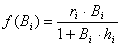

Eq. 67where, ri is the maximum production/biomass ratio that can be realized (for low Bi’s), and ri/hi is the maximum net primary production when the biomass is not limiting to production (high Bi’s). For parameterization it is only necessary to provide an estimate of ri / (Pi/Bi), i.e., a factor expressing how much primary production can be increased compared to the base model state. If a Forcing function is applied to primary production (see Apply FF (primary producer), it multiplies the r parameter in Equation 67.